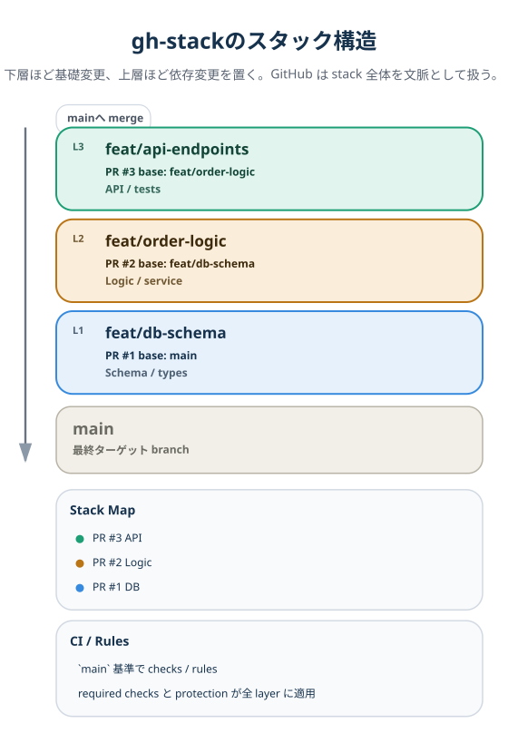
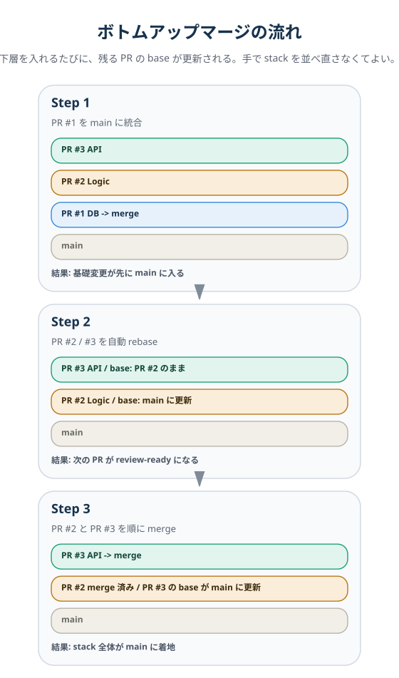

gh-stack完全解説｜AIマルチエージェント時代のブランチ戦略が変わる¶
対象 / ポイント
対象: Claude Code、GitHub Copilot Coding Agent、Cursor などを使い、AIエージェント並列開発を現実のチーム運用に落とし込みたいエンジニア
ポイント:
- gh-stack の価値は巨大PR分割だけではなく、依存順ブランチで競合面をずらす点にある
- Stack Map、
main基準の CI/保護ルール、自動カスケードリベースがレビューと統合を前に進める npx skills add github/gh-stackは、エージェント自身に branch の切り方・積み方・載せ替え手順を覚えさせる入口になる
AIエージェントを3台並列で走らせても、開発はきれいに3倍速にならない。止まるのはモデル性能よりも、同じ feature ブランチに差分が集まる Git 運用だ。GitHub の gh-stack は、このブランチ競合の詰まりを「PRを細かくする話」ではなく「依存順にブランチを積む話」へと置き換える。12
この記事の問いは1つだ。なぜ AI エージェント並列開発のボトルネックはプロンプトやモデル品質ではなく、ブランチ戦略に移っているのか。結論を先に置くなら、gh-stack はレビュー改善ツールである前に、エージェントが互いの作業面を踏み荒らさないためのブランチ基盤として読むべきだ。
Before｜3台並列でも3倍速にならない理由¶
まず詰まるのは、同じ feature branch を複数エージェントで共有する場面だ。ECサイトの注文機能を3台で分担すると、担当は分かれて見えても、依存ファイルはすぐ重なり始める。
| エージェント | 主担当 | 触るファイル | 競合しやすい地点 |
|---|---|---|---|
| Agent A | DBスキーマ定義 | models/order.py, migrations/, config/db.yaml | モデル定義、接続設定 |
| Agent B | 注文処理ロジック | services/order.py, models/order.py | モデル定義、型変更の追随 |
| Agent C | REST API実装 | api/orders.py, tests/conftest.py, config/db.yaml | テストfixture、設定、API契約 |
この3台が同じ feature/orders に向かって順番に push すると、models/order.py と config/db.yaml が先にぶつかる。API 側まで進むと tests/conftest.py でも衝突しやすい。各差分は局所的には正しく見えても、1本の head にまとめる瞬間に整合性が壊れる。
ここで起きている問題は、単に「AIがまだ未熟だから」ではない。同じブランチの先端を複数の作業者が奪い合う構造が先にあり、その上でエージェントは 3-way merge の文脈を安全に再構成しにくい。結果として、人間が差分を見比べて統合作業をやり直す時間が戻ってくる。
その回避策として1台に全部やらせると、今度は1,000行級の巨大 PR になる。レビュー品質は落ち、マージは遅れ、局所最適のまま main に入るまでの時間だけが伸びる。つまり従来運用では、並列化すると競合が増え、単独化するとPRが肥大化する。
After｜gh-stack は競合面を下から上へずらす¶
gh-stack を入れると、同じ3タスクを「誰が何を担当するか」ではなく「どの依存順で積むか」に変換できる。下層に基礎変更、上層に依存変更を置くと、同一ブランチ共有が生む直接競合を設計段階で避けやすくなる。25
- Layer 1: DBスキーマ定義を
feat/db-schemaに切る - Layer 2: 注文処理ロジックを
feat/order-logicに積む - Layer 3: REST API実装を
feat/api-endpointsに積む
このとき Agent A は最下層、Agent B はその上、Agent C は最上層を担当する。下層で models/order.py が変わっても、上層は「同じ branch 上で競合する」のではなく、「更新された下層の先に自分の差分を載せ直す」形になる。公式ドキュメントが言う cascading rebase は、この載せ直しを UI と CLI の両方で扱えるようにしたものだ。23
ここでいう「構造的に解決する」とは、あらゆる merge conflict がゼロになるという意味ではない。正確には、同一 feature branch の head を複数エージェントが押し合うタイプの競合を、依存順スタックで事前に減らすということだ。依存の切り方が正しければ、レビューも統合も「下から順に確認する」だけで前に進む。
| 観点 | 従来の単一 branch | gh-stack 導入後 |
|---|---|---|
| 競合の出方 | 同じ head に差分が集中 | 下層更新を上層へ伝播 |
| PRサイズ | 1本に肥大化しやすい | 小さい PR を層ごとに分割 |
| rebase の責任 | 人間が手で順に調整 | UI/CLI でカスケード処理 |
| レビュー文脈 | 依存関係が見えにくい | Stack Map で位置関係が見える |
gh-stack の仕組みを支える3つの柱¶
gh-stack が効く理由は、branch を増やすからではない。依存順・レビュー文脈・マージ順を GitHub 側が理解するからだ。12
1. スタック構造¶
最下層の PR だけが main を向き、その上はひとつ下の branch を base にする。これにより「基礎変更を下、依存変更を上」という順番を pull request 自体が表現できる。GitHub 公式も、データモデルやスキーマを下層、API や UI を上層に置く依存チェーンを典型例として示している。2

2. Stack Map と main 基準の評価¶
GitHub の PR UI には stack map が表示され、どの PR が何層目かをレビュアーが一目で把握できる。さらに重要なのは、中間 PR であっても main を最終ターゲットとみなして branch protection rules と CI が評価される点だ。つまり PR #2 の base が PR #1 でも、チェックの観点では「最終的に main へ入る差分」として扱われる。これで「一番下の PR しか本当のチェックが走らない」という従来の stacked workflow の弱点がかなり薄まる。126
3. ボトムアップマージと自動リベース¶
マージは下から上へ進む。下層が入るたびに、残りの PR は自動で rebase され、次の最下層 PR は main を直接 target する形へ更新される。merge commit / squash merge / rebase merge の3方式に対応し、merge queue も stack-aware だ。26

AIエージェント連携｜npx skills add github/gh-stack の意味¶
GitHub 公式ドキュメントは npx skills add github/gh-stack をトップページに置き、別ページでは Using AI Agents with Stacks を独立した節として用意している。そこでは、エージェントが stack 構造を計画し、適切な layer で branch を切り、mid-stack change のために上下へ移動し、rebase と PR 作成まで実行できると説明している。15
ここから実務上見えてくるのは、gh-stack が人間向けの CLI にとどまらず、エージェントに branch の切り方・積み方・載せ替え手順を教えるための手順書としても使える点だ。トップページでの扱いと AI Agents 向けガイドの分け方を見る限り、GitHub は gh-stack を単なる PR 整理機能ではなく、エージェントが branch choreography、つまり branch の切り方・積み方・載せ替え順を理解するための共通手順として前面に出し始めていると読める。人間が「まず gs init、次に gs add」を覚えるだけでなく、エージェント自身にその順序を教えることが価値になる。
実務上の使い道は3つに整理しやすい。
- 大きな diff を渡して「これをスタックに分けて」と依頼する
- 先に Layer 1〜3 を設計し、各エージェントへ担当 branch を割り当てる
- 下層レビューの指摘を受けたとき、エージェントに下へ降りて修正し、上層まで rebase させる
これは Claude Code の hooks / skills や、各種コーディングエージェントの instruction system と発想が近い。AI に「どう書くか」だけではなく「どう branch を運ぶか」まで学習させると、初めて並列化の ROI が残る。
制約と注意点¶
導入前に見るべき制約は明確だ。利用可能性、リポジトリ境界、依存方向、再構成、merge 運用の5点を押さえておきたい。156
- 2026年4月18日時点でも private preview で、リポジトリ単位の有効化が必要だ。待機列に入っても、すぐ全員が使える前提ではない。14
- stack は同一 repository 前提で、cross-fork stacks は未対応だ。fork ベースのコントリビュートでは branch の連鎖をそのまま保てないため、OSS 的な運用にそのまま当てはめることはできない。6
- 線形履歴が厳格に必要で、依存順を誤ると rebase は普通に止まる。
gh-stackは conflict をなくす魔法ではなく、 conflict の種類を減らす基盤だ。6 - 途中で branch を差し替えたり順序を入れ替えたりする操作は、現時点では
unstackとinit --adoptを使う再構成が基本になる。相互依存が強いタスクには向かない。56 - squash merge は公式にサポートされているが、仕組みを理解せずに運用すると「なぜ commit hash が変わったのに上層が残るのか」が見えにくい。チーム内で merge 方法の共通理解は必要だ。26
まとめ¶
結論は明快だ。AI マルチエージェント開発で本当に効くのは、依存順 branch によって同一 head の奪い合いを避ける点にある。gh-stack を読むべき位置は、レビュー改善機能の延長ではなく、統合順序を GitHub 上で管理するブランチ基盤だ。
次に設計対象になるのは、モデル選定そのものより、どの layer に誰を置き、どの順で main に近づけるかという branch strategy だ。GitHub は stack map、main 基準の CI、AI agent skill を同じ文脈で提示している。そこから読めるのは、ボトルネックが UI や CLI の操作量よりも、統合の順序設計に移っているということだ。125